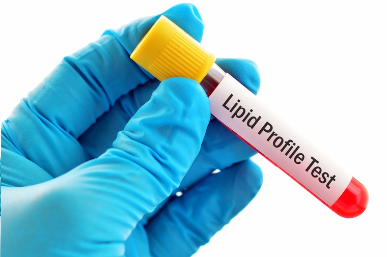

<!-- First Content Start from here -->
<div class="main-content">
    <div class="container">
        <div class="row">
            <div class="col-md-4">
                <h3 style="font-family: Cambria, Cochin, Georgia, Times, 'Times New Roman', serif;color: #000;">Lipid
                    Profile</h3>
                <hr>
                <p style="color: #000;">As Known as <b>Lipid Profile Blood</b> </p>

                <p style="color: black;"> &#9989; Certified Labs</p>
                <p style="color: #000;"> &#9989; Home Sample Collection</p>
                <p style="color: #000;"> &#9989; Reports Guaranteed with in 24 hrs</p>
                <p style="color: #000;"> &#9989; Digital Reports</p>
            </div>

            <div class="col-md-6">

                
                <hr>
            </div>


            <div class="col-md-4">

            </div>

            <div class="col-md-6">
                <h4 style="font: normal; color: #000;">₹400</h4>
                <p>Pay via cash or <b> Digitally</b></p>
                <button type="button" class="btn btn-outline-secondary">Add in Cart</button>
                <button type="button" class="btn btn-info" (click)="onPageLoad()">Book Now</button>
                <hr>
            </div>

            <div class="col-md-4">

            </div>

            <!-- Next Content Start from Here -->
            <div class="col-md-8">
                <h3 style="font-family:'Times New Roman', Times, serif; color: #000; font: normal; margin-left: 55px;">
                    Why Book With Us ?</h3>
                <hr>
                <div class="header">
                    
                    <h4 style="font-family:'Times New Roman', Times, serif; color: #000; font: normal; ">Free Home
                        Sample Collection</h4>
                    <br>
                    <p style="color: #000;"> A certified professional will collect your sample from a location of<br>
                        your preference.</p>
                </div>
                <hr>
                <div class="header">
                    
                    <h4 style="font-family:'Times New Roman', Times, serif; color: #000; font: normal;  ">
                        Digital reports</h4>
                    <br>
                    <p style="color: #000;"> Get the reports right in your mailbox within 24 hours. You will be<br>
                        notified
                        of the tests requiring more time for investigation and <br> report generation..</p>
                </div>

                <hr>
                <div class="header">
                    
                    <h4 style="font-family:'Times New Roman', Times, serif; color: #000; font: normal;  ">
                        Offers and affordable prices</h4>
                    <br>
                    <p style="color: #000;">Get great discounts and offers on tests and packages..</p>
                </div>

            </div>
            <!-- Next Phase regarding the test -->

            <div class="col-md-4">

            </div>

            <div class="col-md-8">
                <mat-accordion>
                    <mat-expansion-panel (opened)="panelOpenState = true" (closed)="panelOpenState = false">
                        <mat-expansion-panel-header>

                            <mat-panel-title style="color: #17a2b8; text-align:center;">
                                What is this Test...?
                            </mat-panel-title>

                        </mat-expansion-panel-header>
                        <p>Lipid profile test is a set of tests used to measure the amount of cholesterol and other
                            types of fats present in your blood. This test is helpful in assessing the risk of
                            cardiovascular diseases (CVD).</p>

                        <h5 style="color: black; font: bold;">Test parameters:</h5>
                        <p> &#10066;HDL (High-density lipoproteins)</p>
                        <p> &#10066; LDL (Low-density lipoproteins)</p>
                        <p> &#10066; VLDL (Very low-density lipoproteins)</p>
                        <p> &#10066; Total cholesterol</p>
                        <p> &#10066; Triglycerides</p>

                        <h5 style="color: black; font: bold;">What is the importance of lipids?</h5>
                        <p>Lipids are a bunch of fats and fat-like substances which are very useful constituents of the
                            cells in our body. They are also an important source of energy. Cholesterol and
                            triglycerides are the two important lipids. Cholesterol and triglycerides are transported
                            are circulated into the blood through lipoprotein particles. Each lipoprotein particle is a
                            combination of cholesterol, phospholipids, triglycerides and protein molecules.</p>
                    </mat-expansion-panel>
                    <br><br>
                </mat-accordion>

                <mat-accordion>
                    <mat-expansion-panel (opened)="panelOpenState = true" (closed)="panelOpenState = false">
                        <mat-expansion-panel-header>

                            <mat-panel-title style="color: #17a2b8; text-align:center;">
                                Test Preparation
                            </mat-panel-title>

                        </mat-expansion-panel-header>
                        <p>Inform your doctor if you are on any medications, have any allergies or underlying medical
                            conditions before your Lipid Profile. Your doctor will give specific instructions depending
                            on your condition on how to prepare for Lipid Profile.

                            For this test, you may be asked to fast for at least 9-12 hours prior to the test. In youth
                            with no risk factors like high blood pressure or diabetes, this test may be recommended
                            without fasting..</p>
                    </mat-expansion-panel>

                </mat-accordion>

            </div>


        </div>
    </div>
</div>